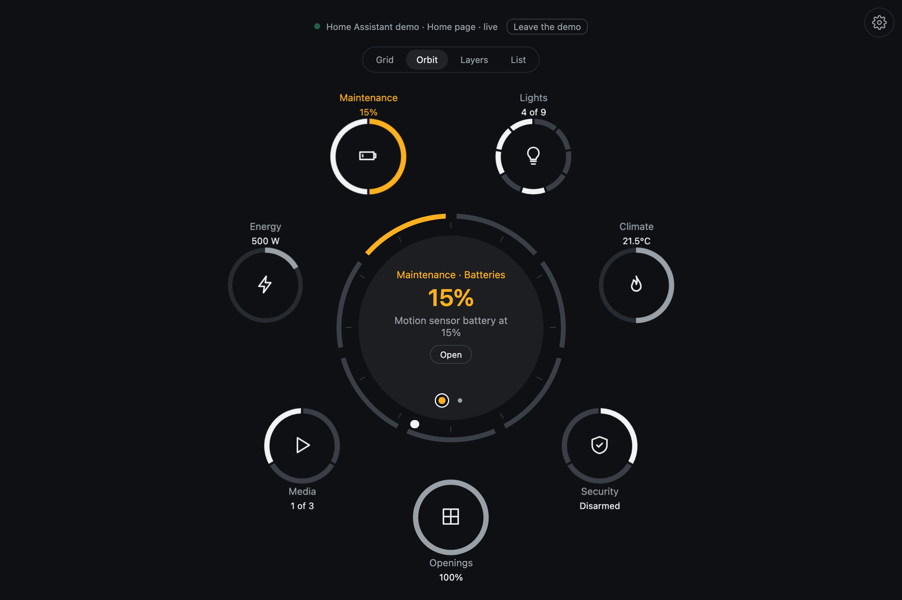
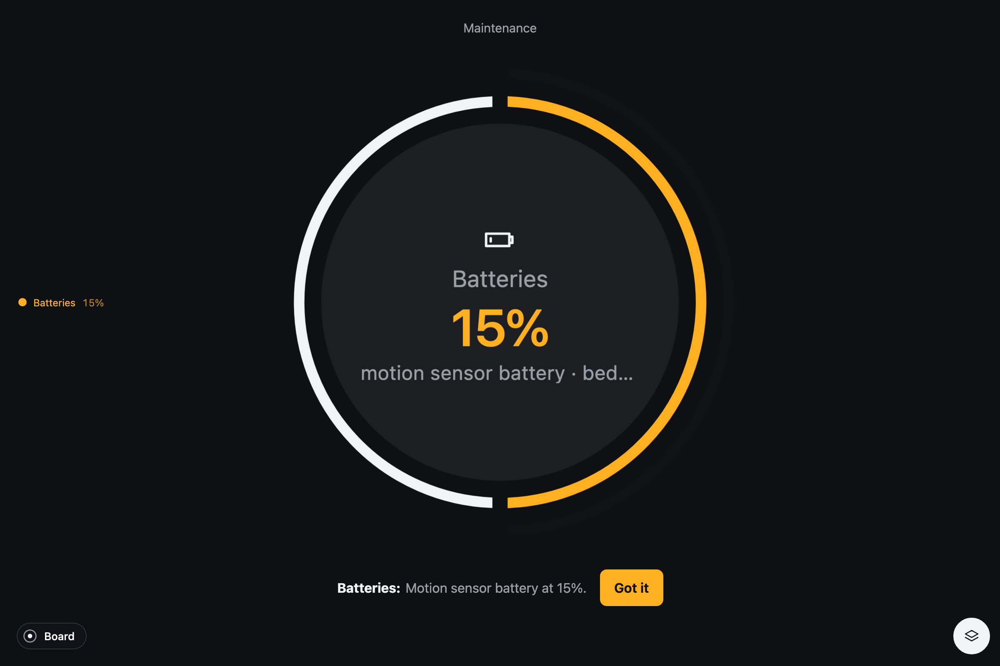
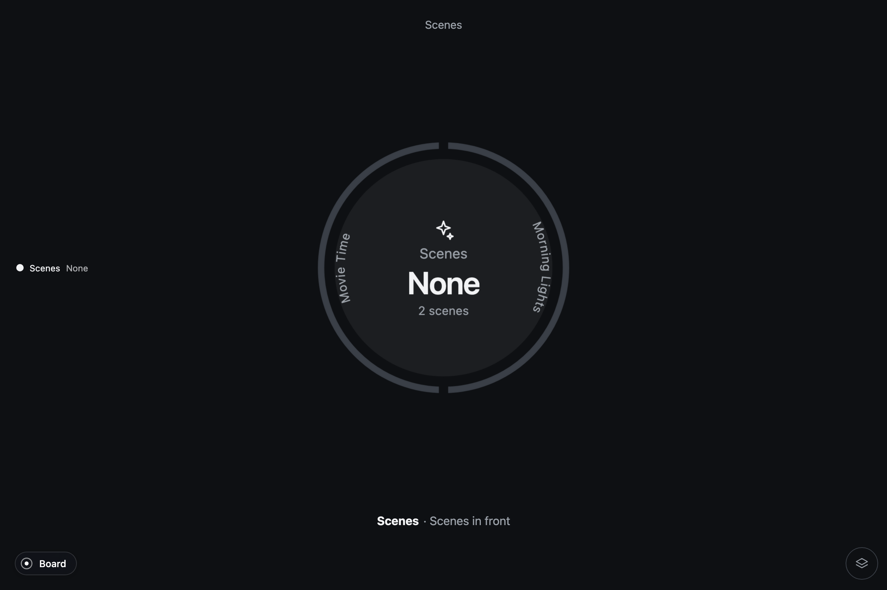

In use
Home Assistant
Pulse connects to the states Home Assistant already sends to your dashboard. Each channel finds its entities by domain, device class or capability, so you do not need to write an entity list. Channels appear when there is something to show. This is the most complete Pulse integration so far.

Three ways in
- The card
custom:zumer-pulse, from the Add card dialog of any dashboard, with a visual editor. Pulse inside a dashboard you already have. - The strategies
A dashboard type, Pulse, that is one full-screen object; and a section strategy to drop a Pulse into a sections view.
- The app
A standalone page that signs in with Home Assistant's own login and talks over its WebSocket. For a kiosk, a round screen, a tablet on the wall.
The card is a single JavaScript module, a dashboard resource only: no integration, no add-on, nothing on the server. Install, options and troubleshooting are in the README of Pulse for Home Assistant and the card's reference.
The systems
| System | What it looks for |
|---|---|
| Lights | Every light as a segment; the first dimmable one as a dial, in its color, with a color wheel in the detail; switches as plugs |
| Climate | The thermostat as a dial; its mode and its preset as choices; a second thermostat; a fan; a comfort range with a knob at each end; the humidity with its day |
| Security | The alarm as a choice, with a keypad when the panel asks for a code; cameras in the face, live in the detail; sirens, locks; doors, windows, smoke, gas, water, motion |
| Openings | Covers with a position as dials; the garage door; valves |
| Media | Players, with the artwork of what plays; a source list; the volume |
| Energy | Power, with its day; carbon monoxide; the water heater; the meter's month in the detail |
| Scenes | Every scene on a ring, the last activated marked; tapping one activates it |
| Maintenance | Updates to install, vacuums, batteries running low, devices reporting a problem, the repairs Home Assistant raised |
By room, each area of the registry is one object with those channels read within it, floor by floor; a scene counts in a room when something it sets is there.
Alerts are rules over states
The interesting ones cross systems. Motion, or something open, with the alarm armed. Heating with a window open. The garage open at night. A lock that did not finish locking. A battery under twenty percent. Carbon monoxide past a threshold. Each alert comes with its action, a real service call: lock it, close the windows, disarm, install, or just "Got it".

Command feedback
A control pulses while the service call is on its way and settles when Home Assistant reports the new state. A refused call keeps a red outline and a Retry. Numbers and times follow the language of your Home Assistant profile, and the states in the pulse's list of changes come in your language from Home Assistant itself.
Try it without Home Assistant
Pulse for Home Assistant carries the six homes of demo.home-assistant.io as an interactive demo source: lights that turn on, a thermostat that heats, a scene that activates. The tests run over them, and so can you: npm run dev in its repository, then open the gallery.
